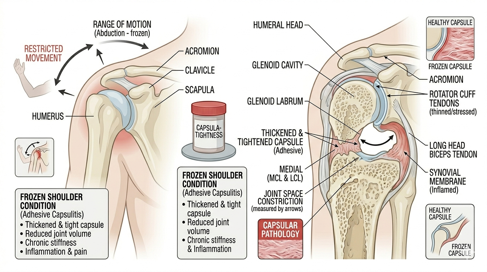

Frozen Shoulder (Adhesive Capsulitis)

Quick Definitions
Frozen Shoulder: A condition characterized by pain and global restriction of shoulder movement due to capsular adhesion.
Patient Profile
Age 40–60, diabetic patients, sedentary lifestyle
Subjective Assessment
- Gradual onset shoulder pain
- Severe stiffness
- Difficulty in overhead activities
- Night pain
Objective Assessment
- Observation (restricted movement)
- Capsular pattern restriction
- ROM ↓ (External Rotation > Abduction > Internal Rotation)
- Pain at end range
Step-wise Clinical Assessment
- History taking
- Check stage (freezing/frozen/thawing)
- Observe movement
- Palpation
- ROM assessment
- Capsular pattern check
- Functional limitation
- Clinical reasoning
Clinical Reasoning
Global restriction → capsular involvement
External rotation most limited → Frozen shoulder
Night pain → inflammatory stage
Clinical Decision Flow
Shoulder pain → Check ROM restriction
↓
Global restriction → Frozen shoulder
↓
Check pattern
↓
ER > ABD > IR → Confirm diagnosis
Differential Diagnosis
- Rotator cuff injury
- Shoulder impingement
- Arthritis
Red Flags 🚨
- Severe unrelenting pain
- History of trauma or fracture
- Signs of infection
- Chronic Inflammation
Viva Questions
- What is capsular pattern?
- Stages of frozen shoulder?
- Why ER is most affected?
Key Points 📌
- Capsular pattern is key feature
- Common in diabetics
- Three stages: Freezing, Frozen, Thawing
Common Mistakes ⚠️
- Ignoring capsular pattern
- Confusing with rotator cuff injury
Comparison 🔍
| Condition |
Main Feature |
| Frozen Shoulder |
Global restriction (capsular pattern) |
| Rotator Cuff Injury |
Painful arc + weakness |
Case Example 🧾
50-year-old diabetic patient presented with gradual onset shoulder pain and stiffness.
He had difficulty in overhead activities and severe restriction of movement.
Examination showed capsular pattern, confirming frozen shoulder.
Clinical Pearls 💡
- Capsular pattern is key diagnostic feature
- External rotation is most restricted movement
- Night pain suggests inflammatory stage
Quick Revision ⚡
Capsular pattern → Key feature
ER > ABD > IR → Movement restriction
Night pain → Early stage
3 stages → Freezing, Frozen, Thawing
References 📚
- David J. Magee – Orthopedic Physical Assessment
- Kisner & Colby – Therapeutic Exercise
- Kendall – Muscles: Testing and Function
- Neer – Shoulder Rehabilitation Concepts
⬅ Back to Home